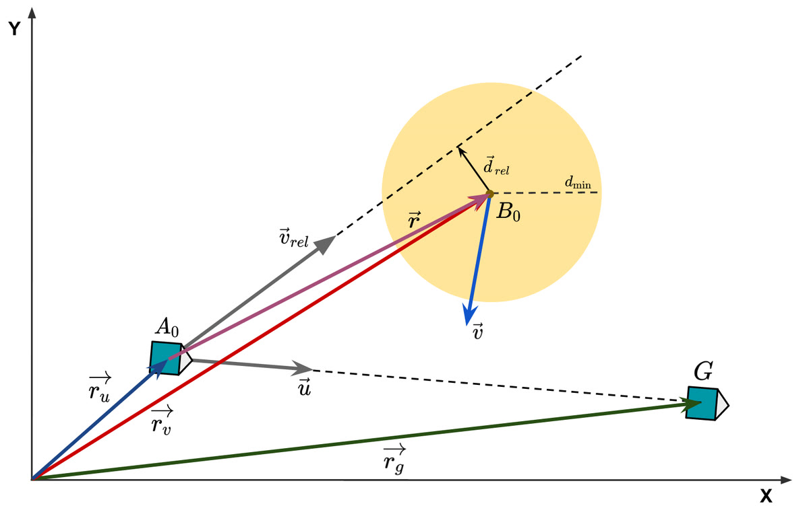
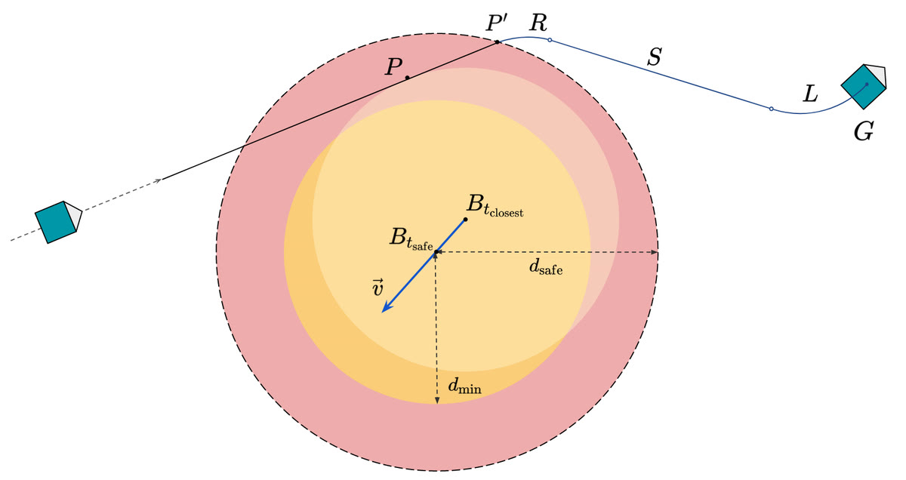
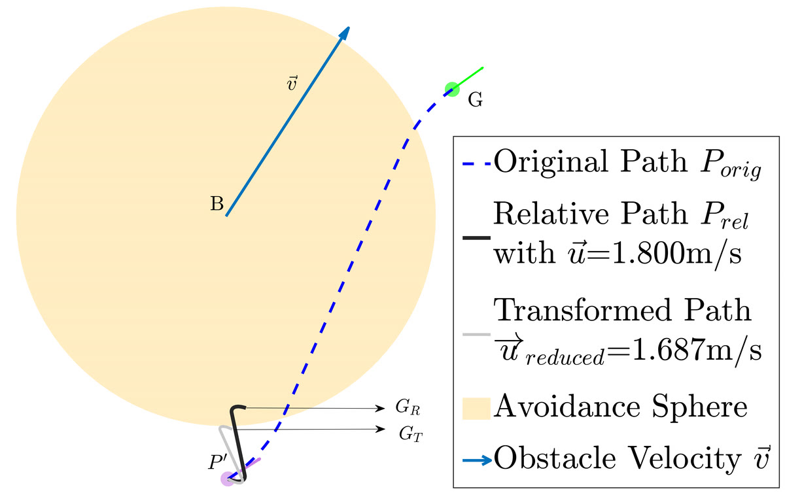

The problem
IGVC puts the robot on a grass field with painted lane lines, construction barrels, ramps and GPS waypoints, and nobody may touch it. Grass under moving sun breaks every assumption a lane detector makes: no tarmac contrast, no straight lanes, hand-painted markings that fade in and out frame to frame. Everything underneath the algorithms is also yours to build, chassis, drivetrain and electronics included.
What I built
- Real-time lane detection for unstructured ground: perspective transform into a bird's-eye view so lane geometry becomes metric rather than projective, then PCA with lateral clustering to pull lane and stop-line structure out of noisy candidate pixels, tracked frame to frame with an unscented Kalman filter.
- Localization fusing GPS, IMU and wheel odometry, with waypoint navigation across the course.
- A collision-avoidance and replanning formulation for nonholonomic bases. Rather than switching the velocity vector instantaneously, which a wheeled robot cannot do, it changes it smoothly under a turn-radius constraint, then replans back to the goal with minimum deviation from the original path while avoiding a second collision.
- The vehicle itself: chassis, drivetrain and electronics designed and fabricated in-house.
2× runner-up
Runners-up at IGVC in both 2018 and 2019 against an international field. Three peer-reviewed papers came out of the stack: the vehicle design at IEEE ICCR 2019, the lane detection at SPIE IVPAI 2019, and the collision avoidance at TAROS 2021.
What worked
- Doing the perspective transform first. Once the image is a bird's-eye view, a lane is a shape of known metric width, so PCA and lateral clustering become well-posed geometry instead of pixel heuristics, and the output drops into the planner in the units the planner already uses.
- The filter was doing more work than the detector. On grass, per-frame detection is intermittent by nature. Tracking the fitted lane across frames with a UKF is what converted a flickering detection into a lane the controller could actually follow.
- Keeping collision avoidance geometric rather than search-based. The formulation was designed to be cheap enough to run online on a robot with limited compute, which the A* and RRT alternatives were not at that scale.
What didn't
- The collision-avoidance and replanning work was validated in simulation over randomized configurations, not on the vehicle at the competition.
- The perception stack is hand-engineered geometry with hand-set thresholds throughout. It worked on a course whose markings and lighting we could characterize in advance; nothing in it adapts on its own.
- Second place twice, never first.



[ → ]
Links
Vehicle paper (ICCR)
Lane detection paper (SPIE)
Collision avoidance paper (TAROS)
Video
Certificate
Where the figures came from
- hero · YouTube
- replan · Local file (replanning_u_red.png)
- detection · Local file (formulation_and_cdetection.png)
- avoidzone · Local file (replanning_illu.png)
- pubthumb · Local file (taros_pubthumb.png)